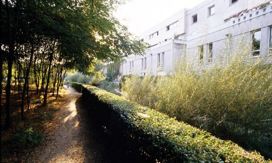

Survolez l'image et agrandissez/réduisez la vue à l'aide de la molette.
Budget: 23 550 000€ TTC
Surface: /
Date début: 1982
Date fin: 1982
Maîtrise d'ouvrage: OPHLM d'Antony
Co-traitant(s): Alexandre Chemetoff
Description:
L’aménagement des espaces extérieurs se fonde sur un principe d’économie
de moyens. Le végétal est considéré comme un matériau brut mis en œuvre
sous forme de bosquets forestiers.
Un caractère vivant et foisonnant se dégage :
les acacias «casque d’or», les peupliers neige, les saules blancs constituent les volumes et les ambiances du lieu. L’intervention comprend aussi la manière de ramasser les eaux de pluie. Plutôt que d’engloutir ces eaux dans de coûteuses canalisations, un astucieux système de récolte en surface a été construit : goulottes, rigoles, caniveaux, fossés, constituant, à l’image de la campagne,
à la fois un système de drainage et un système d’irrigation.
Aucun dispositif d’arrosage n’a donc été nécessaire. Les fossés déterminent naturellement des limites entre espaces publics et espaces privés. Des ponceaux régulièrement répartis permettent à un réseau de chemins piétonniers de parcourir
l’ensemble du site. C’est la réduction de dispositifs campagnards,
empiriques, à une échelle et dans un contexte urbain.
{kind=link}
{kind=link}
{kind=link}
{kind=link}